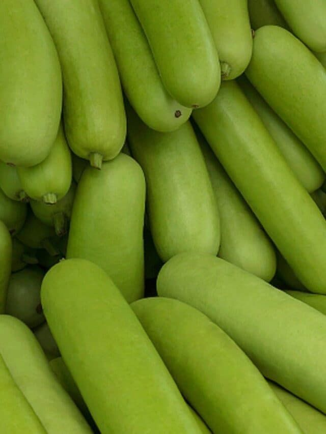

Gourds Cultivation Guide

1. Land Preparation
Plow the land 2–3 times to loosen soil and remove weeds.
Apply well-rotted FYM (10–15 tons/acre) and level the soil.
Prepare pits or ridges for sowing seeds.
2. Seed Selection & Sowing
Use healthy and high-yielding seeds of desired gourd variety (bottle, ridge, or bitter gourd).
Sow seeds in pits spaced 1.5m x 1.5m or along ridges at 45–60 cm spacing.
Ideal sowing season: February–March or June–July depending on region.
3. Water Management
Give light irrigation after sowing, then every 7–10 days as needed.
Reduce watering during fruiting stage to prevent fruit cracking.
Avoid water stagnation, especially in bitter gourd.
4. Fertilization Schedule
Basal: 10–15 tons FYM, 30:40:30 NPK kg per acre.
Top dressing with urea 30 days after sowing for better flowering and fruiting.
5. Weed & Pest Management
Manual weeding 2–3 times during crop period.
Pests: Fruit fly, red pumpkin beetle — control using neem oil or appropriate insecticides.
Diseases: Powdery mildew, mosaic — use resistant varieties or fungicides.
6. Investment Breakdown (Per Acre)
Input
Estimated Cost (INR)
Seeds
₹800 – ₹1,500
Fertilizers & FYM
₹3,500 – ₹5,000
Pesticides/Fungicides
₹2,000 – ₹2,500
Labor
₹7,000 – ₹10,000
Irrigation
₹1,500 – ₹2,500
Total Investment
₹15,000 – ₹22,000 per acre
7. Harvesting & Yield
Start harvesting tender fruits 45–60 days after sowing.
Harvest every 2–3 days for best quality and yield.
Expected yield: 80–120 quintals per acre.
8. Market Rate & Profit Estimation
Market price: ₹800 – ₹1,800 per quintal.
Gross returns: ₹64,000 – ₹2,16,000 per acre.
Net profit: ₹40,000 – ₹1,90,000 per acre.